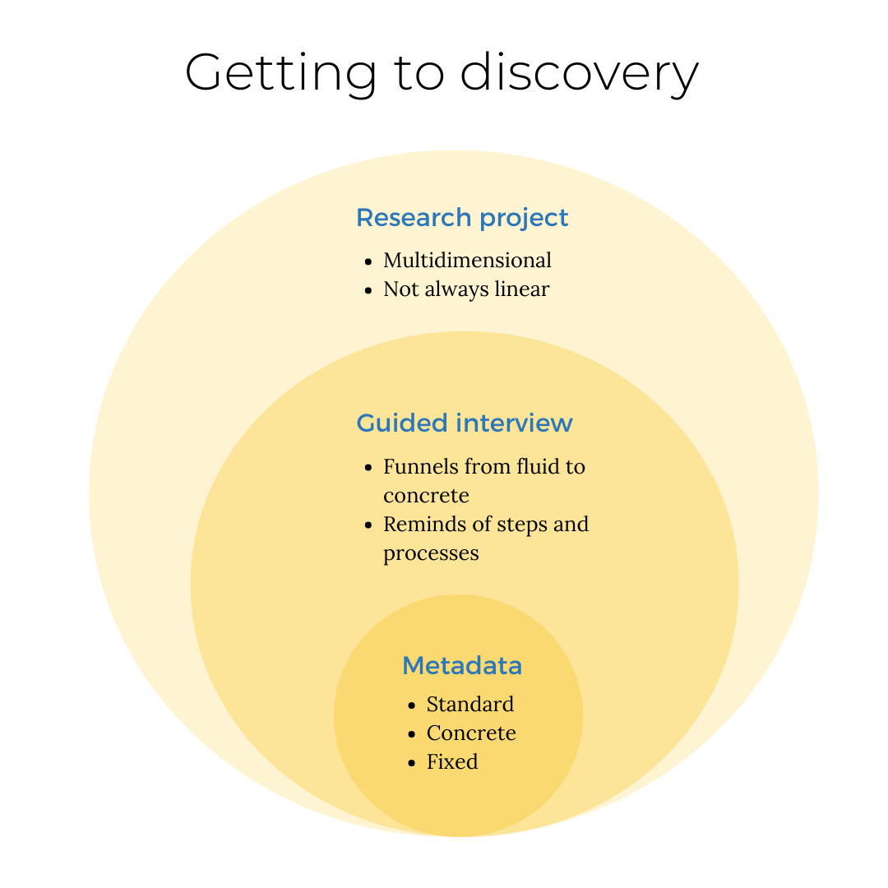

GIS Data Management Services Guide
The Harvard Map Collection collects and preserves GIS data for long-term discovery and reuse in the Harvard Geospatial Library (HGL) . You might like to extend the long-term value of your research by making your data available in a tool like HGL or Dataverse , or perhaps you’d like some feedback on how you are communicating the GIS components of your project. Maybe this is the first time you are thinking about this topic, and it sounds intriguing to you. No matter where you are in this process, we are here to help.
On this page, you will find:
- A list of prompts for creating your own GIS metadata
- A template for doing so
- Descriptions of the consultation services available through the library
Take action
-
Check out a project example.
Email maps@harvard.edu to set up a consultation.
Creating GIS metadata
You may already have a system for citing the GIS layers you’re finding or making. Or maybe it’s the very beginning of your project and you want some tips. Ultimately, the usability of your data comes down to the documentation or metadata you’re creating. GIS metadata is not super intuitive, so this guide is meant to help with that.
GIS project examples with well-described data
Here are some examples of projects where the extra work put into the data, methods, and documentation extends people’s ability to engage with the materials.
| GIS project | Data, methods and documentation |
|---|---|
| Mapping Inequality | Data, methods and documentation |
| Land-Grab Universities | Data, methods and documentation |
| Imperiia Geocards | Data, methods and documentation |
3 steps to discovery
The Harvard Map Collection offers guided interviews, which can serve as an intermediary between your project and structured library metadata to faciliate access and discovery. This section of the guide is meant to elucidate the purpose of the guided interview in the context of your project, and the standardized metadata practices librarians use.

Research project
In the research project stage, you are immersed in the work of your project. You are working to capture and encode your data. You are managing many different aspects of the project.
Metadata
Standardized metadata is important for library systems, because it allows researchers to discover resources via systems like HOLLIS, Dataverse, and the Harvard Geospatial Library.
Creating metadata, however, can be time consuming, and often requires technical subject expertise. Here’s an article about The Roles of the Metadata Librarian in a Research Library .
Guided interview
Our guided interviews are meant to liaise between the vast knowledge you have about your project, and the technical, specific ways to capture it so that many people can benefit from and continue building upon your work.
| Action item | What’s in it for the library | What’s in it for the researcher |
|---|---|---|
| Partner with the library to package and describe your GIS data using methods aligned with open access best practices | Provide better access to data materials because they are well-described and discoverable; Fulfill objectives of supporting GIS needs of researchers | Extend the value of your work by making your methods reproducible; facilitate transparency; Ensure you (and not a publisher) are retaining rights to your data |
Suggested next steps
-
While our service entails helping you create metadata and you are not required to fill out the metadata template, we do recommend familiarizing yourself with the content covered in the metadata template so that you have a sense of what type of information you might think about capturing in your project as you’re working.
-
Schedule a guided interview with us . We will walk through prompts designed to generate high-quality metadata. Even if your goal is not to deposit datasets, it can be helpful to organize your thoughts about how to communicate your data work. If you’d like to preview the prompts ahead of time, they are available from our documentation guide .